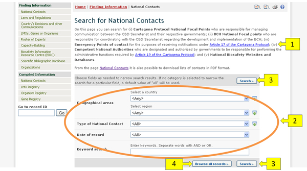
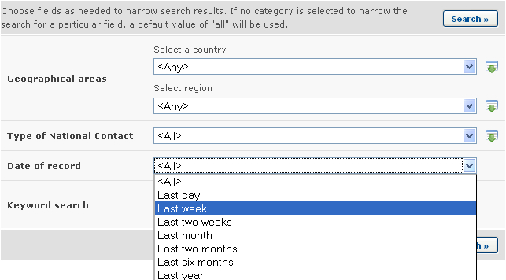
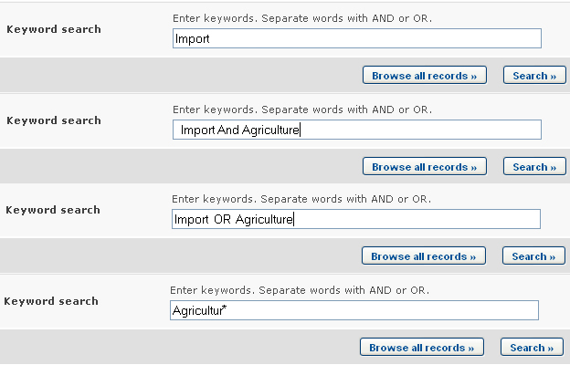
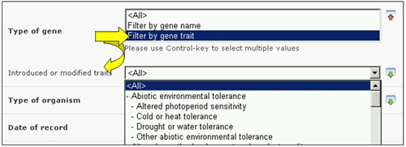

La sección de búsqueda de información del CIISB proporciona páginas web para la búsqueda en cada una de las categorías de información en el CIISB. Para acceder a la base de datos deseada, haga clic en uno de los enlaces de la página principal o del menú de la izquierda. Estas páginas fueron diseñadas para permitir la especificación de criterios de búsqueda y luego presentar los registros encontrados que coinciden con los criterios de búsqueda utilizados.
Todas las páginas de búsqueda tienen un diseño similar y consistente. Tomemos por ejemplo la página de búsqueda de Contactos Nacionales.

La página de búsqueda contiene:
-
Una breve descripción de la página de búsqueda y el tipo de información que puede ser encontrada a través de ella.
-
El área de ingreso de criterios de búsqueda.
-
Los botones Realizar la búsqueda
-
El botón Examinar todos los Registros
Los criterios que pueden usarse están dados por los cuadros de entrada que aparecen en la página de búsqueda de cada categoría de información. Los mecanismos de búsqueda del CIISB funcionan recogiendo todos los registros y descartando aquellos que no coinciden con los criterios utilizados. Por lo tanto, los cuadros de entrada son usados para limitar la búsqueda. Esto significa que pueden ser utilizados para obtener un conjunto de registros más pequeño y específico, pero nunca uno más amplio.
Se pueden encontrar varios tipos de cuadros de entrada (también llamados campos) en el área de ingreso de criterios de búsqueda. Muchos de estos tipos de campos se encuentran también en las páginas de búsqueda de otras categorías de información. La siguiente lista describe dichos tipos de campos, que son comunes entre las páginas de varias categorías de información:
- Campo de lista de selección: Este tipo de campos contiene una listade términos predefinidos. La lista de términos está compuesta por vocabulario controlado (ver http://bch.cbd.int/help/faq/#THE). El ejemplo más común es el de este tipo de campo es el campo País, que permite al usuario acotar los resultados de la búsqueda a aquellos que refieran a un país determinado. Otro ejemplo de este tipo de cambio es el campo Región, que permite acotar la búsqueda una región especial en el mundo. Por favor tome en cuenta que los campos País y Región no pueden ser usados al mismo tiempo: sólo uno de ellos puede usarse a la vez. También es posible seleccionar más de un término de la lista; esto se trata en “cómo usar la selección múltiple”.

- Campo de fecha de registro: Este tipo de campo permite limitar la búsqueda a un intervalo de tiempo determinado.

-
Campo de Palabra Clave: Este campo permite acotar los resultados de búsqueda a registros que contangan determinadas palabras. Se puede ingresar una palabra o una combinación de palabras claves usando la sintáxis estándar de palabras claves explicada a continuación. Tome en cuenta que la búsqueda de palabras claves sólo produce resultados que contengan exactamente el texto buscado y no posibles sinónimos que no hayan sido agregados (una búsqueda con la palabra “Maiz” producirá una lista de registros que contienen la palabra “Maíz” pero no los registros que contengan “Zea mays”).
-
Operador Y: si dos palabras claves son combinadas usando el operador Y (ver figura) entonces solo se encontraran registros que contengan ambas palabras.
-
Operador O: si dos palabras claves son combinadas usando el operador O (ver figura) entonces solo se encontraran registros que contengan al menos una de las dos palabras.
-
Operador asterisco: El usuario puede ingresar parte de una palabra seguida por un asterisco (ver figura) de modo que se encuentran los registros que contienen palabras que comienzan con el texto ingresado. Por ejemplo si se ingresa “Agricult*”, entonces todos los registros con palabras que empiecen con “Agricult”, como puede ser “Agricultura” y “Agricultor”, serán encontrados.
-

-
Campos para agregar criterios de búsqueda adicionales: Algunas categorías de información contienen campos que permiten agregar más criterios de búsqueda al area de criterios de búsqueda. Por ejemplo, en la página de búsqueda de OVM, Genes u Organismos se encuentra un campo llamado “Tipo de Organismo” para agregar un criterio de búsqueda adicional para defininr cómo buscar Organismos Vivos. Al seleccionar una opción en ese campo aparecerá un nuevo campo en el área de criterios de búsqueda. Por ejemplo, si el usuario selecciona la opción “Filtrar por identificador exclusivo”, entonces aparecerá un nuevo campo de lista de selección llamado “Identificador Exclusivo”. El usuario podrá entonces seleccionar un término de la lista de términos predefinidos de ese campo a fin de refinar los resultados de búsqueda a un identificador exclusivo específico. No obstante ello, el usuario puede haber seleccionado la opción “Filtrar por técnica empleada” previamente para hacer aparecer un campo llamado “Técnica” a efectos de limitar los resultados de la búsqueda a los de una técnica específica.

Este tipo de campos son similares a los campos de lista de selección en apariencia pero operan de manera absolutamente diferente. Un aspecto distintivo de estos tipos de campo es que todas las opciones comienzan con “Filtrar por”. Tome en cuenta que se pueden agregar varios campos de búsqueda nuevos al seleccionar más de una opción en el campo de criterios adicionales; vea también “cómo usar la selección múltiple”.
Finalmente, el botón Realizar la búsqueda realiza la búsqueda basado en los criterios especificados y luego muestra los resultados obtenidos, mientras que el botón Examinar todos los registros muestra todos los registros de la categoría actual de información.